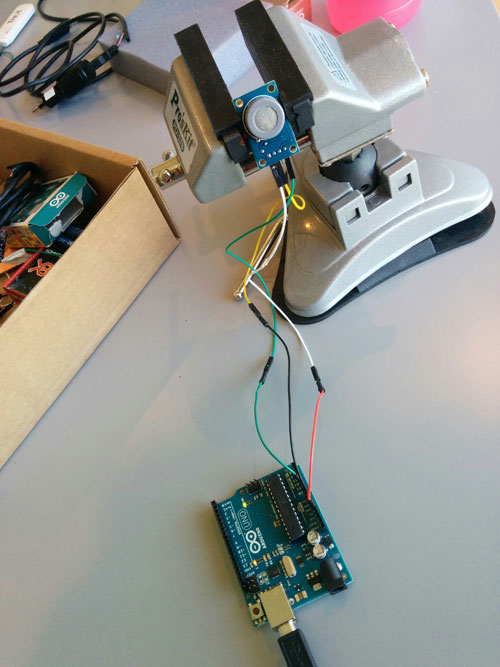
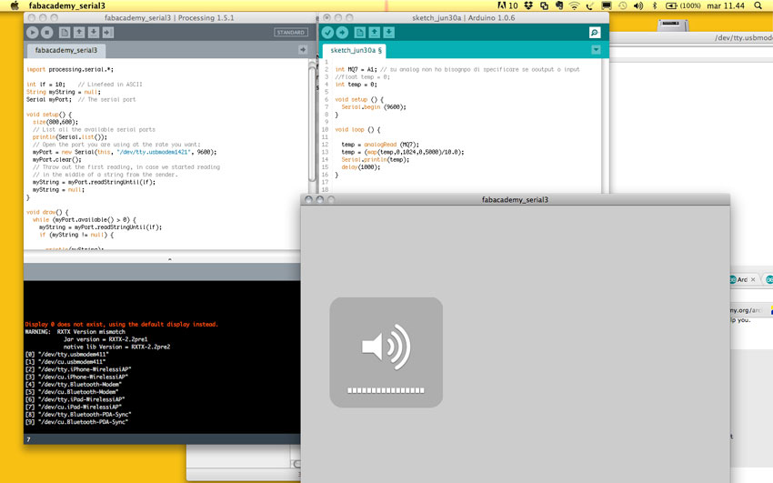

Interface and Application Programming


MQ7_analogRead Arduino
int MQ7 = A1; // it is my sensor on analog pin
//float temp = 0;
int temp = 0; // not sure about it. Using float the sensor wasn't reading, as the serial monitor showed
void setup () {
Serial.begin (9600);
}
void loop () {
temp = analogRead (MQ7);
temp = (map(temp,0,1024,0,5000)/10.0);
Serial.println(temp);
delay(1000);
}
Serial.pde
// Example by Tom Igoe
import processing.serial.*;
int lf = 10; // Linefeed in ASCII
String myString = null;
Serial myPort; // The serial port
void setup() {
size(800,600);
// List all the available serial ports
println(Serial.list());
// Open the port you are using at the rate you want:
myPort = new Serial(this, "/dev/tty.usbmodem1421", 9600);
myPort.clear();
// Throw out the first reading, in case we started reading
// in the middle of a string from the sender.
myString = myPort.readStringUntil(lf);
myString = null;
}
void draw() {
while (myPort.available() > 0) {
myString = myPort.readStringUntil(lf);
if (myString != null) {
println(myString);
background(255);
fill(float(myString),200,120);
if (float(myString) > 50) {
ellipse(width/2, height/2, float(myString)*2, float(myString)*2);
} else {
rect(0, 100, float(myString)*4, 120);
}
}
}
}
Processing IDE warning text
Display 0 does not exist, using the default display instead.
WARNING: RXTX Version mismatch
Jar version = RXTX-2.2pre1
native lib Version = RXTX-2.2pre2
[0] "/dev/tty.usbmodem411"
[1] "/dev/cu.usbmodem411"
[2] "/dev/tty.iPhone-WirelessiAP"
[3] "/dev/cu.iPhone-WirelessiAP"
[4] "/dev/tty.Bluetooth-Modem"
[5] "/dev/cu.Bluetooth-Modem"
[6] "/dev/tty.iPad-WirelessiAP"
[7] "/dev/cu.iPad-WirelessiAP"
[8] "/dev/tty.Bluetooth-PDA-Sync"
[9] "/dev/cu.Bluetooth-PDA-Sync"